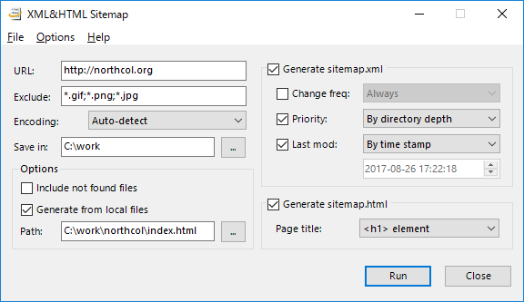

Contents
Overview
XML&HTML Sitemap is a Windows application for easily and simultaneously generating XML and HTML sitemaps.
Generated XML files (sitemap.xml) conform to the Sitemaps XML format, and thus you can submit them to services such as Google Webmaster Tools without change. Generated HTML sitemaps (sitemap.html) can be freely altered and published in your websites.
Features
- Sitemap generation from local files
- Customizable template files for HTML sitemaps
Usage
Most operation can be done in the following main window.
Basic
Basic usage is as follows:
- Specify a URL of your website in the URL text box.
- Specify a folder to save sitemaps in the Save in text box.
-
Turn on the following check boxes:
- Generate sitemap.xml: To generate an XML sitemap.
- Generate sitemap.html: To generate an HTML sitemap.
- Click Run, then sitemap generation executed.
Generating sitemaps from local files
Turning on the Generate from local files check box, you can generate sitemaps from local files. In this case, sitemaps is generated without accessing the actual website. Addresses written in the sitemaps are the ones obtained by converting local file paths into addresses based on the URL specified in the URL text box.
Details of each item
This section explains the details of each setting item available in the main window.
Basic items
- URL: Specifies a URL of a website to generate sitemaps. Begin with
http(s)://. - Exclude: Specifies patterns representing files and directories to be excluded from sitemaps. (Details are explained later.)
- Encoding: Specifies an encoding of web pages on the website.
- Save in: Specifies a folder to save sitemaps.
Wildcards are available for patterns written in the Exclude text box above.
The wildcard * represents an arbitrary string, and ? represents an arbitrary character.
To specify multiple patterns, separate them with the ; character.
Here are some examples of patterns. This example explains the case of generating sitemaps for http://example.com.
| Pattern | Explanation |
|---|---|
*.gif;*.png;*.jpg | Exclude GIF, PNG, and JPG files |
/img/* | Exclude the http://example.com/img directory |
Options
- Include not found files: Includes files that cannot be accessed with errors such as 404 into sitemaps
- Generate from local files: Generates sitemaps from local files. Specify in the Path text box the location of a local file corresponding to the home page of the site.
XML Sitemaps
- Change freq: Corresponds to the
changefreqtag of XML sitemaps. - Priority: Corresponds to the
prioritytag of XML sitemaps. - Last mod: Corresponds to the
lastmodtag of XML sitemaps.
HTML Sitemaps
- Pate title: Specify a string to use as the title of each webpage.
Templates
The accompanied template.html file is a template file for HTML sitemaps.
You can freely edit the file as you like.
The template file may contain special tags for inserting results. The table below shows the list of available special tags.
| Tag | Explanation |
|---|---|
<%sitemap /> | Sitemap |
<%home_title /> | Title of home page |
<%date format="..." /> | Date |
<%time format="..." /> | Time |
The format attribute of the <%date> and <%time> tags
specifies a format of date or time.
The format specification is common to the one of .NET.
See Custom Date and Time Format Strings
for details.
Here are some examples of date/time format specifications.
| Example | Result |
|---|---|
<%date format="MM-dd-yy" /> | 07-31-99 |
<%date format="MMMM d, yyyy" /> | July 31, 1999 |
<%time format="hh:mm tt" /> | 03:05 PM |
<%time format="HH:mm.ss" /> | 15:05.25 |